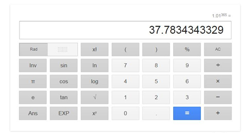

Look at babies. You cannot tell how many falls it takes a crawler to learn how to toddle without help. Yet, after each and every fall, they stand up and keep going, even after a painful flop.
Look at older kids. They are enthralled by exploring the world around. They dream big. They think of what they want to be when they grow up and how they can make a difference.
Now look at adults around. What has become of those bold and self-confident people? Of those dreamers and explorers with their big ambitions? When did they manage to change that much and why?
We live in a society where it is improper to make mistakes. Most people are so terrified of failures that they would better avoid doing anything than screwing something up. I have a friend who is too shy and scared to get into a relationship because he has no idea of how he should behave with a girl (I’ll bet you can say that about some of your friends too. We all have those friends). That is why he prefers Robinson Crusoe mode. For God’s sake! Even if your first dates don’t go with a run, you will learn a lesson and blaze the trail to make it smoother for the next time. This is also true for people who don’t apply for a job with good prospects because they doubt if they fit in well or if they manage to cope with it. But why??? If the company employs you, it means they have their grounds to trust you! And they are way more experienced at taking such decisions than you are. We can give you more examples alike than there are stars in the Milky Way.
But when do people start putting their fears BEFORE their wish to give it a shot? In truth, we don’t know the answer. But we do know full surely you should fight your fears!
From school time, we should instill in our children right attitudes to grades and knowledge. Grades are nothing but your knowledge displayed, so you should aim for knowledge, but not grades. When a teacher calls children to the board, they are not supposed to be flattened over their desks. Instead, they are supposed to raise their hands eager to take the floor. Whatever subject they learn. However challenging is the task. Wherever they know the solution or have no idea what’s in store. Later in life they will have tons of situations with no ready algorithms at hand. And you cannot learn every algorithm anyway. But you can learn how to be proactive and fearless – the qualities which are always highly prized
By the way, after people get rid of their fear of failure, some of them develop a fear of not being able to learn a lesson. They are afraid that they will keep stepping on the same rake but, fortunately, soon they get over it too.
We are sure that all people are given thousands of opportunities to develop themselves and improve their life. Sadly, most people don’t seize those opportunities and don’t fulfil their potential. Many of them are living a life truly satisfied with their being consistent to standards set for them by someone else (parents, teachers, bosses, etc.). They think that doing "good enough" is enough and there is no need to perform better. It will be enough to graduate from college with grades good enough. It will be enough to get a job with good enough salary. But what if they could step back and look at themselves from outside the box? If they could see the frames they are living in. What amazing world we would have if everyone on the planet started doing a bit more and a bit better than they do. We might even make sci-fi writers get their faith in humanity back again!
Another amazing thing we would like to share with you today is a KAIZEN approach. Kaizen is a Japanese productivity philosophy focused on the permanent improvements in your work which you make of your work, development, business, management, and all other aspects of life. The main idea is to get better in all things you do. And this returns mind-blowing results!
It’s pure mathematics, if you get just one percent better every day, in a year you’ll become 37 times (1.01 ^365) better!!!
For those in doubt:

Once in a while, life serves us up with a unique chance, and it’s all in our hands whether to take it or waste it. We know it too well how hard it can be standing on the edge of doing something. Almost as hard as taking a leap out of a plane when skydiving. Since we never know where we might end up. But if you have already made up your mind to change yourself for better (which is true for you otherwise you wouldn’t have joined 100 Days Workout program), you should give up thinking of it and simply do it! When you sit on the floor of a plane, the only thing you have to do is to take a jump forward. That’s it. It's a snap. But if you start overthinking, you are going to sit there forever.
What is our point here? The point is that you live only once and every new second you get a chance to change something in your life for better. And you don’t have to wait for an opportunity. The only thing you have to do is stop fearing and start changing! And you will see how beautiful and amazing our world is!